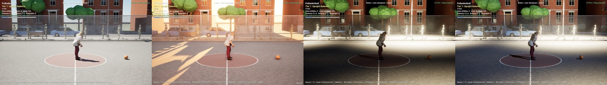
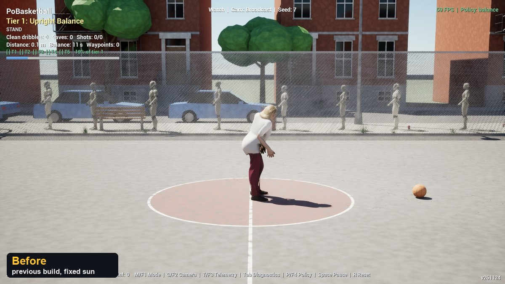
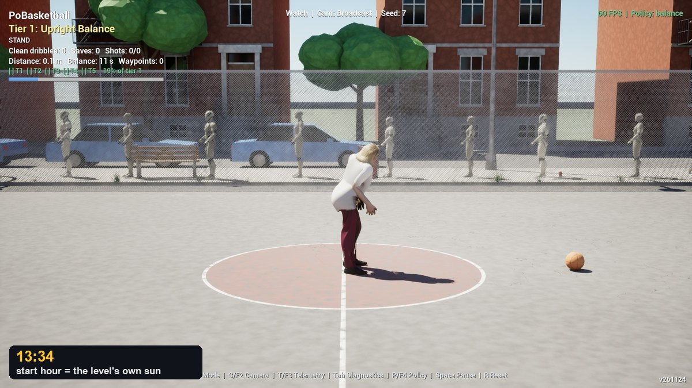
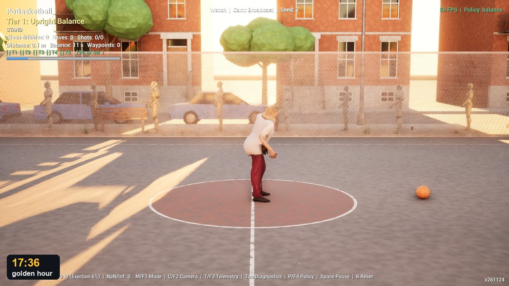
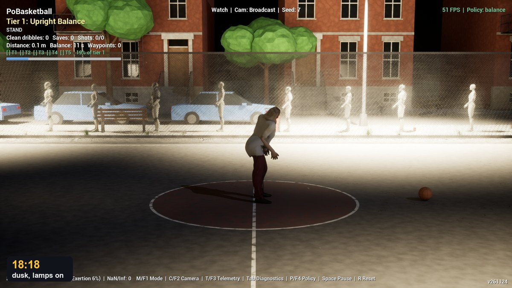
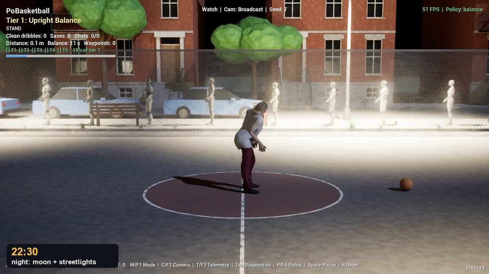
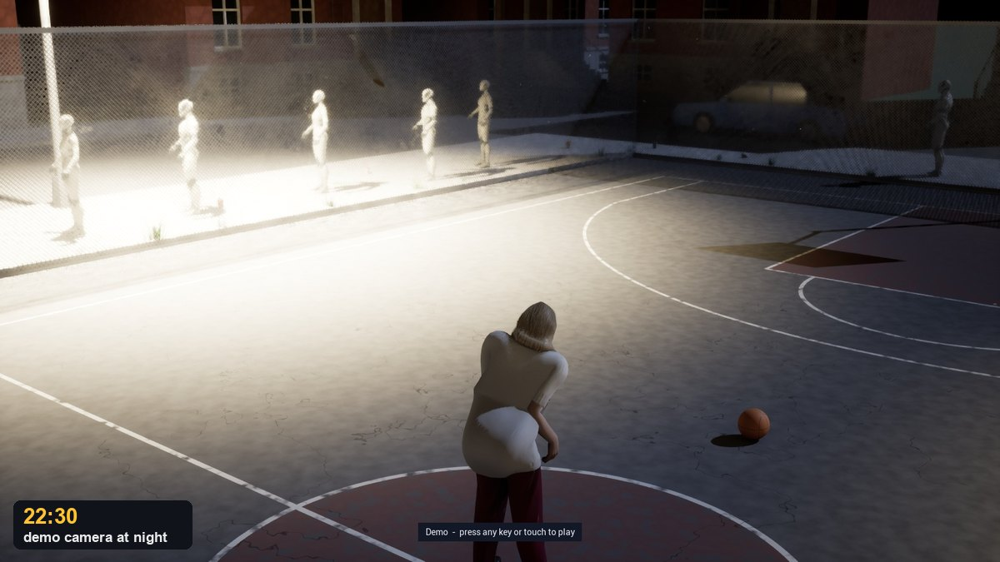
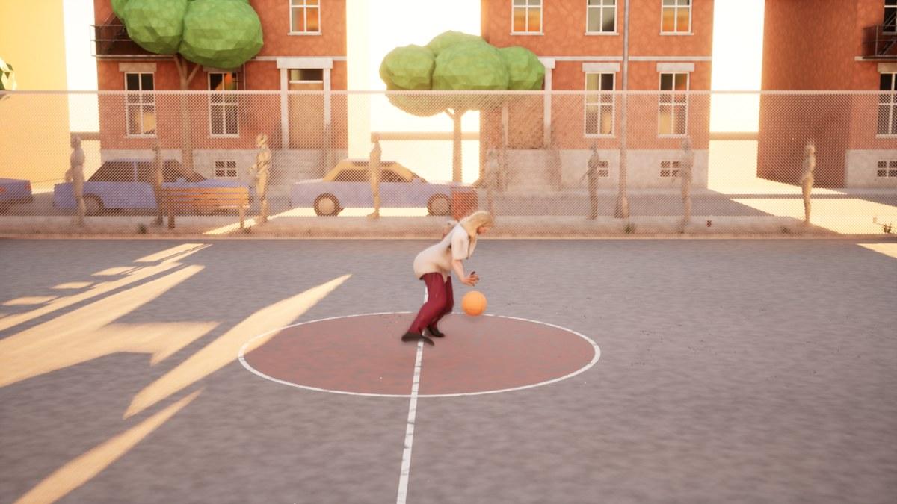
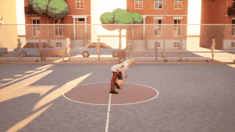

A new world subsystem (UCourtTimeOfDaySubsystem) moves the level's sun through the day, turns it into a dim
blue moon at night, and switches on a spot light under each PCG streetlight from dusk to dawn. Everything is presentation:
MuJoCo, the policies and the HUD are untouched. All images are engine captures (-ShowcaseCapture, 1600×900,
same seed and camera), with the clock frozen at the hour shown.

SM_StreetLight instance, created once after PCG finishes generating. On 17:54 → 06:06, 15-minute fades.The clock starts at the hour whose sun matches the level's saved sun (pitch −55°, yaw 35° → 13:34), so the first frame is the court as it looked before. Mean pixel difference over the court area: 1.7 / 255, mean brightness 158.0 vs 157.9 (the character's pose differs slightly between runs).




The lamps come on at 17:54, before sunset is over. A first version switched them on at 18:30, which left 18:18 completely black: the sun had faded and the moon had not started yet.


Only 4 streetlights exist in the PCG output (17 m spacing around the block), so the far side of the court is lit by the moon only. Court floodlights would need a new prop and are not part of this change.
The live game rendered offline through the broadcast camera: tier 3 dribbling, seed 7, 17:36, 1920×1080 at 30 fps with 8 temporal samples (motion blur and clean edges). MuJoCo and the dribble policy step on MRQ's fixed frame time, so the same arguments give the same clip. No HUD: MRQ renders the scene only.


pwsh Scripts/render_broadcast.ps1 -TimeOfDay=17.6 -TimeOfDayFreeze -StreetballSeed=7 -StreetballStartTier=3 -StreetballMaxTier=3 -StreetballDribbleHand=right -> Saved/MovieRenders/<date>_<time>/broadcast.0000-0359.png (12 s; ~4 min on an RTX 2060)
| Setting (DA_ShowcaseConfig › TimeOfDay) | Default | Meaning |
|---|---|---|
bTimeOfDay | on | Run the system at all |
StartHour | −1 | Negative: the hour matching the level's own sun |
DayLengthMinutes | 20 | Real minutes per 24 h; 0 stops the clock |
LampsOnHour / LampsOffHour | 17.9 / 6.1 | Streetlights on / off |
LampLumens | 6000 | Per lamp |
NightExposureEV100 | 0.5 | Fixed night exposure (lower = brighter) |
-TimeOfDay=21.5 sets the start hour, -TimeOfDayFreeze stops the clock.Streetball.Showcase.TimeOfDayModel checks the start hour reproduces the level's sun, noon
elevation, moon and lamp hours, that the light never comes from below the horizon, and that its intensity never jumps more than 5 % in a minute.
All 5 Streetball.Showcase.* tests pass.pwsh Scripts/capture_time_of_day.ps1 -OutDir SCREENSHOTS/20261124_time_of_day/raw, then
make_media.py in this folder.